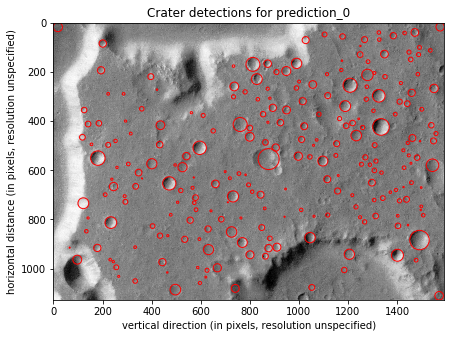

Getting Started¶
Installation¶
The latest version of PyCDA is available for download via pip. As things are improving rapidly, you’ll want the latest version.
PyCDA currently supports Python 3.6 only; we recommend using a virtual environment (such as conda or virtualenv) to keep your dependencies straight. As PyCDA has not been tested for dependency version ranges, pip will want to upgrade packages in the environment with which you install PyCDA; this can cause dependency issues in other places.
From your Python 3.6 environment, run:
pip install pycda
pip will install the dependencies for you. You’ve installed PyCDA!
Make Detections¶
To use PyCDA, you’ll need to chop up your image data into reasonably-sized pieces; 2,000 x 2,000 pixels per segment is very reasonable, and better machines can handle much bigger. It really depends on the size of your RAM.
Put your image segments into a directory and denote its path. For this example, we’ll save this 1592 x 1128 pixel image (taken from the Mars Express HRSC instrument):

to the path:
/data/image1.bmp
Now we’re ready to begin. Open your python environment:
-> % python3
Python 3.6.4 |Anaconda, Inc.| (default, Jan 16 2018, 18:10:19)
[GCC 7.2.0] on linux
Type "help", "copyright", "credits" or "license" for more information.
>>>from pycda import CDA, load_image
>>>cda = CDA()
>>>image = load_image('/data/image1.bmp')
>>>prediction = cda.get_prediction(image)
If you’d like to see the progress of your detection, pass the verbose=True keyword argument to the .get_prediction call, like:
>>>prediction = cda.get_prediction(image, verbose=True)
The CDA object will return a prediction object which here is assigned to the alias “prediction.” You can now save your results with:
>>>prediction.to_csv('/data/results1.csv')
To see your detections plotted over the input image, call:
>>>prediction.show()
This should open a popup window on your system with the plot. For our Mars image, it will look like this:
You’ll see the detector performs but isn’t perfect; the large crater in the lower left corner is conspicuous, but the model is designed to detect craters with 80 pixels of diameter or less; to capture larger craters, reduce the image resolution.
Set the image resolution and save the image for later reference:
>>>prediction.set_scale(12.5)
>>>prediction.show(save_plot='/data/myplot1.png')
And you’ve begun. Happy crater hunting!
Read about the submodules to learn how to modify your CDA pipeline and quantify detection errors; for a more in-depth example, look at the demo notebook